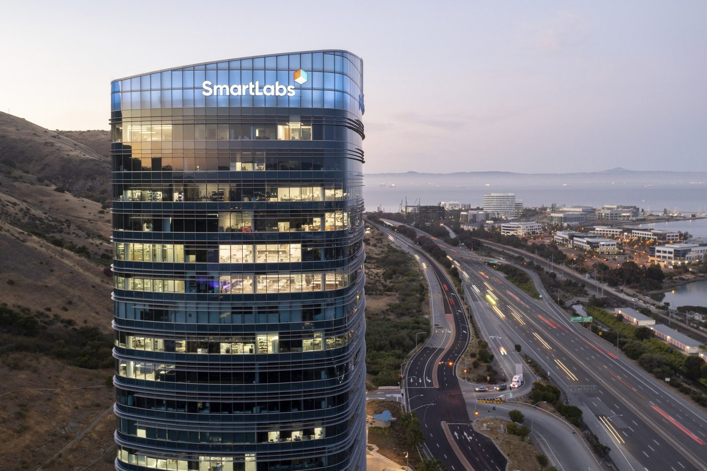
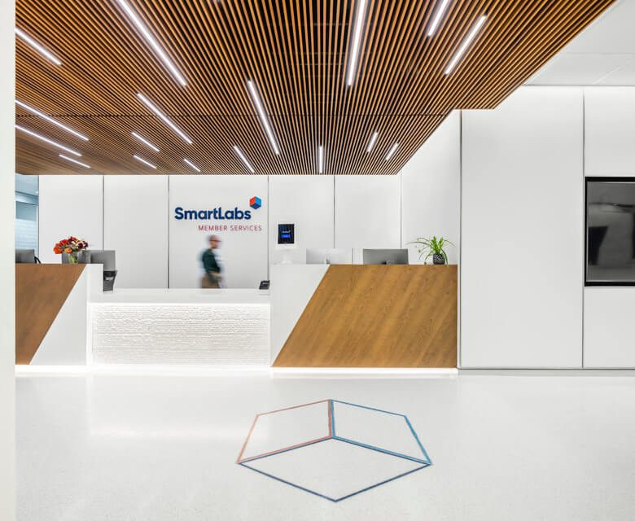
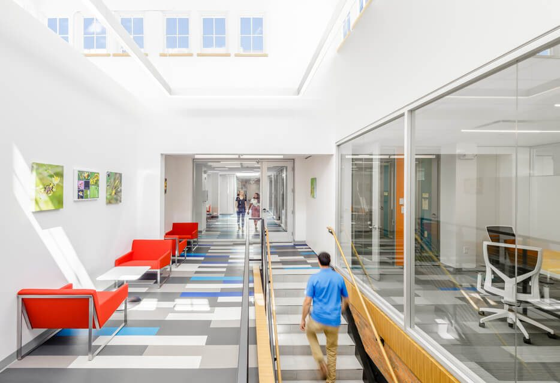
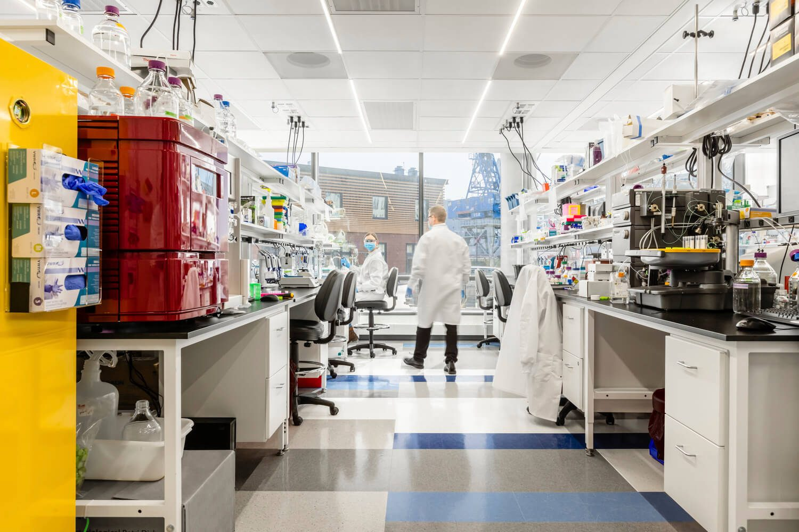
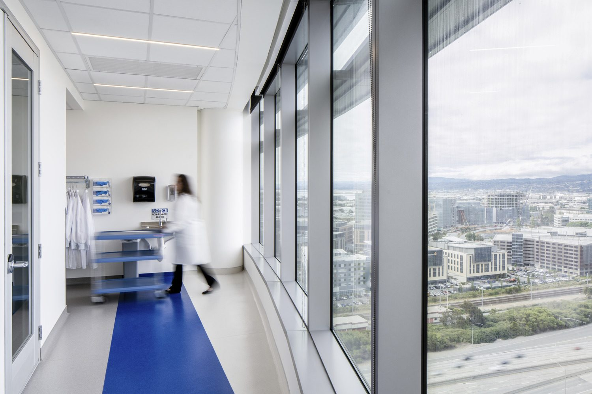
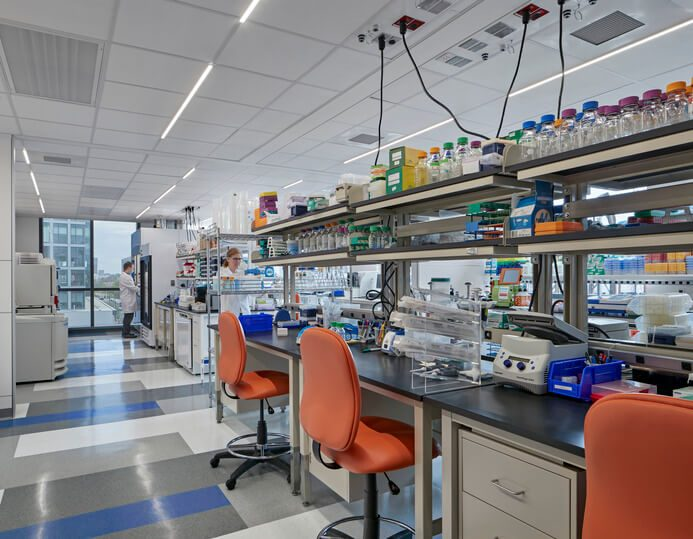

My Career
Building Platforms for Science
Today I'm Managing Partner at Kaliper and founder of APC Science: Kaliper plans, builds, and operates mission-critical infrastructure across life sciences, healthcare, data centers, and advanced industrial; APC Science is hands-on with drug-development strategy and peptide and antibody chemistry. Before that, two companies defined my path.
This is the story of my highly unusual and sometimes hard-to-believe career. I've told it to friends, family, partners, and people in the industry over the years as it was happening, most often while reminiscing over a glass of wine. Eventually someone I respect a lot cornered me and told me to put pen to paper. So I built this to tell it. My goal is for you to learn something about my journey you can't find on LinkedIn.
Part I · 2007–2014
Advanced Peptides
The Beginning: From Lab Bench to Business Plan
I first got involved at the Whitehead Institute in Cambridge at fifteen, and by sixteen I was its youngest paid researcher. My mother worked in the Whitehead libraries, which gave me the chance to meet people there. I had been attending their annual high school lecture series since I was twelve, and by fifteen I was taking science and math classes at Harvard alongside my high school APs. Alan Jasanoff, a young PI building his neurophysics lab, gave me a shot. I was soon engineering and producing novel proteins, conjugating them to newly discovered nanoparticles in an effort to build next-generation contrast agents for fMRI. They threw me in, handed me textbooks and articles, and told me to figure it out if I wanted to stick around. That experience set my definition of what research science should be.
The Realization: Why Wait Until Forty?
As a junior at Boston University studying biomedical engineering, my plan was the traditional academic track. One night with friends we counted the years like a checklist, finish undergrad, PhD (five to six years), postdoc (three to five), assistant professor, associate, then full professor, and only with tenure would I finally have control and resources. I was twenty. By the time we finished, I realized it could take until forty before I had the independence I wanted. I asked my father, who was on the research faculty at Harvard Medical School, if this was really the only path. He laughed and said, "That's if you're lucky," and suggested I'd have a better life as a lawyer or an engineer. When I pressed him for an alternative, he said, almost as an afterthought, "You could start a company." It was not encouragement, just a statement of fact. But it stuck.
Finding the Gap: The Birth of Advanced Peptides
I had been working in protein engineering, conjugations, and chemistry for years, and I kept noticing that many of the CROs our labs used were unreliable, late, low quality, or not working at all. I would take the same problem, do deeper research, and find ways to make it work. That was the gap. I could start a company focused on the hardest peptide problems, deliver better science, and have universities and pharma pay for it. I spent a year learning what I didn't know, talking to business school professors, learning to read a P&L, meeting banks and investors. By September 2007, at twenty-two, I had secured funding to build a peptide lab. It was right before the financial crisis; I still cannot quite believe investors trusted me with their capital at that age.
Surviving the Crisis: Trial by Fire
We found an old ink and resin shop on Commonwealth Avenue in Boston, gutted it, and converted it into a peptide lab. Before the first year ended, the 2008 financial crisis hit, research budgets were slashed, and a global acetonitrile shortage directly threatened peptide chemistry. I remember thinking, "You wanted this," when everyone looked at me to find a way forward. We scrambled to redesign processes, find alternative vendors, and keep the company alive. That was the first of many ups and downs. You just kept figuring it out.
Scale and Innovation: 3,000 Projects Later
Over the next eight years, we worked on more than 3,000 projects with over 120 organizations: universities like Stanford, Harvard, MIT, Yale, Princeton, Oxford, and A*STAR, and pharma companies like Pfizer, Merck, Johnson & Johnson, EMD, and Bayer. Our work grew from synthesis and conjugations into designing experiments, producing molecules, and then formulation, delivery, scale-up, GMP and GLP programs, preclinical and IND-enabling studies, clinical support, patent strategy, and in some cases product launch. Some projects were fee-for-service, some co-investments, some built from proprietary scaffolds and ligands unique to us.
The Data Insight: Early Machine Learning in Drug Discovery
Between 2011 and 2013, after running thousands of projects, I noticed a pattern: partners would design 1,000 peptides, screen them, move 20 forward, then 5, and discard the rest. Almost no one looked backward: which modifications correlated with binding, which conjugations produced the folding or epitope activity they wanted. We built a software platform that combined our project data with partner data to predict better peptide designs. It was one of the earliest applications of machine learning in the space, valuable enough that we spun it off and sold it to a close partner.
The Exit: Time for Something New
By twenty-nine I had lived through more projects than most people see in twenty years. Most people didn't realize how young I was. Pre-Zoom, most interactions were by email and conference call, so my concepts showed up before my age did. Around the same time, a patent we co-developed with a multinational was licensed and commercialized, giving me stable income from royalties and the space to decide whether to continue or build something new. (The story of that molecule, a synthetic keratin repair system that became a hair-science product, is here.)
Part II · 2014–2024
SmartLabs

A New Vision: The TSMC of Pharma
By 2014 I met two people who became my co-founders: PC Zhu, who had a PhD in biochemistry from Fudan and an MBA from Chicago Booth and ran a biologics and antibody CRO, and Seth Taylor, who had a PhD from Johns Hopkins and an MBA from MIT Sloan and ran a consulting firm advising Fortune 200 pharma on R&D strategy and M&A. We saw the same shift: pharma was externalizing R&D at an unprecedented rate, while new modalities (gene editing, mRNA, cell and gene therapies, viral vectors, protein degradation) each required infrastructure existing labs were not built to support. We believed the industry needed enterprise-quality labs with operations, compliance, and resources built in: fractional infrastructure, the way TSMC did it for chip fabs and AWS did it for data centers.
The Launch: From Vertex to CRISPR
We raised $8.8 million in seed funding in January 2015. Ian Smith, the CFO of Vertex, took a flyer on us and backed us with a 124,000 square foot sublease of Vertex's former R&D headquarters at 675 West Kendall Street. We called the company Mass Innovation Labs. An operational partnership with Charles River Laboratories, the Charles River Accelerator and Development Labs, CRADL, stood up our first vivarium program and gave us compliance infrastructure and credibility when we were still three founders and a whiteboard. CRISPR Therapeutics was our first tenant; they moved in while we were still assembling furniture and grew from three people to fifty in their first year. The early work they did in that building became the foundation for the first FDA-approved CRISPR therapy for sickle cell disease.
The Problem: Static Labs in a Dynamic World
Within a year we ran into our first structural problem. Demand was strong, but our inventory rarely matched what clients needed. If we had open space with fume hoods and a client wanted segregated tissue culture suites, we could not deliver; even a request for 15 fume hoods when we had 5 could kill a deal. Our labs were too static, and build times and costs made no sense for a company planning to stay three years. Every expert I spoke with said reconfigurable labs were impossible: by definition, labs were fixed infrastructure. I didn't believe that. I had spent years on robotics teams at MIT building underwater vehicles modularly, swapping components to solve new problems.
The Breakthrough: Modular Labs
I convinced our investors to let me build a prototype. We ripped out a heavy chemistry lab with sixteen eight-foot fume hoods (dead inventory for months) and rebuilt it with a prototype modular framework we marketed as "anything space." Within a month, we leased it to four very different companies: Beam Therapeutics, Oncorus, Edigene, and a battery-technology startup. In November 2017 we raised a $14.8 million convertible note to fund the transition, building our own system of modular walls, segregated utilities, HVAC, and digital controls, plus software to manage logistics, bookings, and compliance that became SmartLabs OS.
Scaling Up: From Boston to National
In 2018 we rebranded from Mass Innovation Labs to SmartLabs and partnered with BioMed Realty, Blackstone's life sciences arm, opening 21 Erie Street in Cambridge, our first full building designed with the modular framework, full within six months. In 2019 we raised a $36 million Series A-1; in 2020 a $45 million Series A-2 carried us to an 80,000 square foot facility in South San Francisco, proving the model worked outside Boston. In 2021 we raised a $250 million Series B aimed at scale, roughly 300,000 square feet under management at the time, with a goal to triple it toward a national, million-square-foot platform.




Photography courtesy of SMMA.
Enterprise Validation: Big Pharma Joins
Our client base shifted as we grew. We had started by proving the model with startups and growth companies; by the time I left, about half of our clients were global pharma, the same enterprise groups that had always been the most risk averse. Clients and tenants over the years included Johnson & Johnson, Merck, Eli Lilly, AbbVie, Bayer, and AstraZeneca, alongside more than 150 biotech and pharma companies. By the end of 2022 we had about 450,000 square feet open and operating, with another 500,000 square feet of future growth planned and committed, pilot-scale cGMP facilities on both coasts, and a platform supporting more than 2,500 scientists.
The Market Collapse: 2023
Then the market collapsed. The 2023 downturn was sharper than anything I had seen. IPOs disappeared almost overnight and private capital for pre-revenue companies dried up. Almost half our clients were affected, many of them the very startups driving new modalities forward. The growth bets we had made ran headlong into a market that was no longer there to support them. We pivoted: we stopped new expansions, pulled back from future markets, focused on our strongest sites, and restructured to conserve cash. The posture shifted from building for growth to operating for resilience.
The Transition: Time to Step Aside
By the end of 2023 it was clear we would not build new products or pursue strategic growth for a long time. By 2024 the company didn't need more invention; it needed steady management. After nearly ten years, I decided to step aside. In January I made it official, raised a $48 million Series C, and stayed through a six-month transition to give the company a stable footing for its next phase.
Reflections: What Worked, What Didn't
What worked was the proof. We showed modular labs could function at enterprise scale, cut response times from days to minutes, and proved you could build once and reconfigure continuously. We created a new operating model: not outsourcing, not pharma-owned labs, but fully operated labs on demand.
What was difficult was scale. Running one building is manageable; running half a million square feet across two coasts is something else. Every weakness in systems, culture, and process shows up. What worked at 50,000 square feet broke at 500,000.
There were surprises, mostly the caliber of people who joined: Hans, who had run diagnostics divisions globally at Novartis and Bayer; Saquib, who led infrastructure and facilities worldwide for Boston Scientific; Brian, who ran GE Healthcare's global biomanufacturing solutions business. They left senior global roles because we gave them the mandate to fix what they knew was broken. I am proud of what we built: we gave small teams the same infrastructure as Big Pharma in weeks instead of years, enabled breakthroughs that reshaped the decade, and created the Lab-as-a-Service category.
Part III · 2024–Present
Current Work
After stepping aside from SmartLabs, I returned to what I do best: building infrastructure around science and the other mission-critical environments that look a lot like it. As Managing Partner at Kaliper, I plan, build, and operate facilities for institutions, developers, and governments across laboratories and R&D, bio-manufacturing and cGMP, healthcare and clinical, data centers and AI compute, advanced industrial, and operated real estate, often standing up the operating company that runs them. Current work includes two 300,000+ sq ft next-generation life sciences campuses in South San Francisco (more than $1B combined), Taiwan's national CDMO infrastructure strategy, and a major academic medical center's campus consolidation and two-campus merger. Through APC Science, I work hands-on with drug developers on development strategy, modality selection, CDMO sourcing, and the harder technical problems in peptide, antibody, and conjugate chemistry.
Between late 2024 and early 2025 I had what I now call my shortest career segment: a few months as Vice Chancellor of Health Ventures and Vice Dean of Strategy at the University of Pittsburgh's School of Medicine. After spending two decades dodging the academic track I once mapped out for myself, I managed to become a failed academic anyway, and in record time. The work itself was the kind I love: recruited to architect a commercial-ventures strategy for a $1B+ annual research enterprise, I designed the PITT START translational institute and PITT INC accelerator, structured alternative capital strategies with sovereign and institutional investors, and co-led planning for a 3M+ sq ft health sciences campus restructuring. Then, in April 2025, a $150M institutional budget reduction, following federal funding cuts, ended the initiative before most of it could leave the page. It is the one chapter I truly regret not getting to finish. I would have loved the chance to build it, and to really try to change the very beginnings of innovation and how it gets nurtured.
I also serve as a Board Member of New York City's Real Estate Life Sciences Advisory Board (NYCEDC), helping guide the city's $1B LifeSci NYC initiative and a 10M sq ft life sciences expansion, and in 2025 delivered the keynote on the global CDMO industry outlook at Taiwan's national summit. I continue to advise founders, investors, developers, universities, and institutions, and to speak on the future of biomedical R&D.
